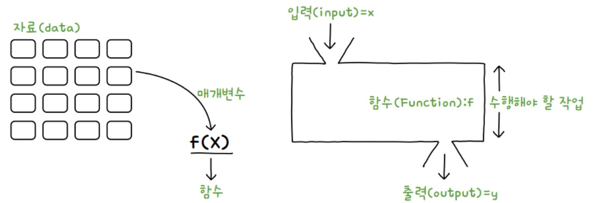
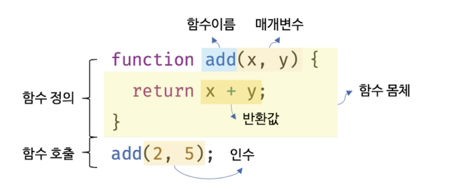

함수
1. 함수의 기본 형태
-
함수의 개념
-
함수는 코드의 집합을 나타내는 자료형으로 함수를 사용하는 것을 함수 호출이라 표현
- 매개변수: 함수를 호출할 때 괄호 내부에 입력되는 여러 가지 자료
- 리턴값: 함수를 호출해서 최종적으로 나오는 결과

-
함수를 사용하면 좋은 점
- 반복되는 코드를 한 번만 정의해 놓고 필요할 때마다 호출하므로 반복 작업을 피할 수 있음
- 긴 프로그램을 기능별로 나눠 여러 함수로 나누어 작성하면 모듈화로 전체 코드의 가독성이 좋아짐
- 기능별(함수별)로 수정이 가능하므로 유지보수가 쉬움
-
-
기본 함수 정의문
-
함수를 사용하여 코드를 저장한 것을 함수 정의문이라 함
- 기본형:
function 함수명( ){
자바스크립트 코드;
}
- 기본형:
-
함수 정의문({ }) 안에 작성된 코드는 메모리에 할당되어 대기하고 있다가 함수가 호출되면 실행
- 기본형:
함수명( ); 또는 참조 변수( );
예제 코드 보기/숨기기(클릭)
function myFunc(){ document.write("hello", "<br>"); } myFunc(); myFunc(); myFunc(); - 기본형:
-
-
매개변수가 있는 함수 정의문
-
매개변수가 있는 함수 정의문은 함수를 호출할 때 전달하고자 하는 값을 입력하여 호출 가능
- 기본형:
function 함수명(매개변수1, 매개변수 2, …, 매개변수 n) {
자바스크립트 코드;
}
함수명(데이터1, 데이터2, …, 데이터n);

예제 코드 보기/숨기기(클릭)
function myFunc(name, belong){ document.write("안녕하세요. " + name + "입니다.", "<br>"); document.write("저는 " + belong + " 소속입니다.", "<br><br>"); } myFunc("박소영", "국토정보교육원"); myFunc("김국토", "공주지사"); - 기본형:
-
예제 코드에서 사용자의 이름과 소속을 질의응답 창을 통해 입력받고, 입력받은 값으로 함수가 실행되도록 수정해 봅시다.
예제 코드 보기/숨기기(클릭)
let name = prompt("당신의 이름은?"); let belong = prompt("당신의 소속은?"); function myFunc(name, belong){ document.write("안녕하세요. " + name + "입니다.", "<br>"); document.write("저는 " + belong + " 소속입니다.", "<br><br>"); } myFunc(name, belong); -
질의응답 창을 통해 방문자의 아이디를 입력받고, 아이디가 올바른 경우와 올바르지 않은 경우 아래 문구를 화면에 띄우도록 코드를 작성해 봅시다.
- 올바른 아이디: webProgramming
- 올바른 경우: 아이디님 방문을 환영합니다!
- 올바르지 않은 경우: 잘못된 아이디입니다!
예제 코드 보기/숨기기(클릭)
let rightId = "webProgramming"; let promptId = prompt("ID는 무엇입니까?"); function myFunc(promptId){ if (promptId == rightId) { document.write(promptId + "님 방문을 환영합니다!"); } else{ document.write("잘못된 아이디입니다!"); } } myFunc(promptId);
-